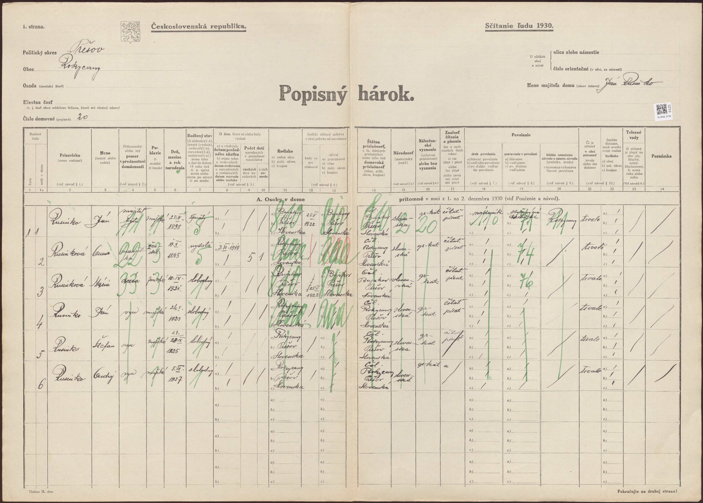
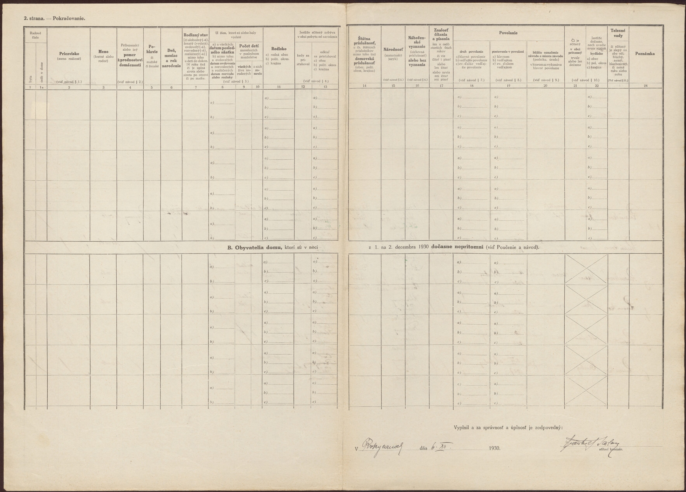

Vetva Rusinko (Bujakov/Brežany → Rokycany → Košice)
Súvisí: Vetva Fejerčák-Guľas (manželka Jána 1898) · Prehľad · Výskumný denník
Gréckokatolícka rodina zo šarišskej dediny Bujakov (dnes Brežany; názov Bujakov platil do 1956, maď. Sárosbuják) — obce s dreveným GK chrámom sv. Lukáša z 1727. Matrične patrila pod GK farnosť Klenov (Klembark), rovnako ako filiálky Rokycany, Bajerov, Kvačany a Žipov.
Rodová línia
- Dedo Ján Rusinko — *29.1.1923 Rokycany, †4.4.2006 Košice (~83 r.). Príčina úmrtia: rakovina pľúc a prostaty (rodinný zošit). Hrob: Verejný cintorín KE, sk. 18, hrob 20 (s babkou Annou). FS
PMQS-J35. - Pradedo Ján Rusinko — 27.4.1898 Bujakov, †28.2.1980 (~82 r.) — nádenník. ⚭ 3.6.1919 Anna Fejerčáková (19.10.1895 Rokycany, †6.1.1967, ~72 r.). Rodina sa 25.5.1922 presťahovala z Bujakova do Rokycian (dom č. 20, od ~1940 č. 22). Spoločný hrob: Rokycany A/33 (foto v prílohách). Väzba dedo→pradedo doložená sčítacím hárkom 1930.
- Deti Jána a Anny: Mária 10.9.1921 Bujakov (osud neznámy), Ján 1923 (dedo), Štefan 28.9.1925 (†1.2.2015 Bratislava, ~90 r.; ⚭ Emília 1925 †2015 — hrob Vrakuňa 11/302), Andrej 5.9.1927 (†5.11.2017, ~90 r.; ⚭ Mária „Holmáňová" 1934 †2024 — hrob Rokycany), piate dieťa zomrelo v detstve (~1919–30, meno nepoznáme) a sestra Anna** narodená po 12/1930 (vieme o nej len z hárku 1940).
- Prapradedo (hypotéza): Ondrej Rusinko — 9.2.1857 Bujakov č. 15, krst 10.2.1857 GK Klenov, †1936, pochovaný v Bajerove (liatinový kríž s nepresným rokom „1861"; ~2006 pri hrobe čerstvé kvety). Krstní rodičia Andreas Sedlák a Barbara Szemanits. Pri krstnom zápise ceruzková poznámka „1894" — zrejme rok vydania výpisu (kandidát: k jeho sobášu; prvé dieťa Ján *1898 by sedelo). Otcovstvo Jána 1898 definitívne potvrdí Jánov krst (fara Klenov). Citácia: film 004406750, obraz 186, ark 3:1:S3HY-6FQ9-H7K.
- Ondrejovi rodičia: Michal Rusinko a Mária rod. Gumanová — gréckokatolícki želiari/roľníci v Bujakove (domy 15/18/19). Doložené deti: Ondrej 1857, Ján 3.7.1859, Juraj *~7/1862. Gumanovci sú v Bujakove a okolí miestny rod. (Kandidáti na 3× prastarých rodičov.)
- Najstarší doložený nositeľ mena: Joannes Rusinko, daňový súpis 1715, „Loco Klembark" (Klenov) — overené na origináli MNL (fond N 78, Sáros, téka 6, s. 271); sken v prílohách. Obec vtedy opísaná ako „v hlbokej doline medzi kopcami a lesmi".
Sčítací hárok 1930 — Rokycany, dom č. 20 (kľúčový prameň)
Slovakiana/SNA, hárok 735/121, sčítanie 1.–2.12.1930 (odkaz, foto:

, rub:
):| # | Meno | Vzťah | Narodenie | Rodisko |
|---|---|---|---|---|
| 1 | Ján Rusinko | majiteľ bytu | 25.IV.1898 | Bujakov |
| 2 | Anna rod. Fejerčáková | manželka | 19.X.1895 | Rokycany |
| 3 | Mária | dcéra | 10.IX.1921 | Bujakov |
| 4 | Ján (dedo) | syn | 24.I.1923 | Rokycany |
| 5 | Štefan | syn | 28.IX.1925 | Rokycany |
| 6 | Andrej | syn | 5.IX.1927 | Rokycany |
Hárok dokladá: synovstvo deda, gréckokatolícke vierovyznanie celej domácnosti, sobáš 3.6.1919, pôvod v Bujakove a presťahovanie 25.5.1922, počet detí 5 (1 zomrelo). Drobné odchýlky dní narodenia (25.IV vs. 27.IV; 24.I vs. 29.I) sú zápisy sčítacieho komisára — identita je istá.
Hárok 1940 (šk. 1200, hárok 300, dom 22; Slovakiana cair-ko1bnqu): domácnosť Ján + Anna + Ján (17) + Štefan + Ondrej/Andrej + Rusinková Anna (sestra *po 1930); Mária už v domácnosti nie je. Zverejnená verzia je začiernená — neredigovanú kópiu vydá SNA (žiadosť odoslaná 15.7.2026).
Hroby (všetky overené, fotky v prílohách)
| Kto | Dátumy | Hrob |
|---|---|---|
| Ján Rusinko + Anna rod. Fejerčáková | 1898–1980; 1895–1967 | Rokycany A/33 |
| dedo Ján + babka Anna | 1923–2006; 1928–2000 (pohreb 10.2.2000) | KE Verejný cintorín 18-12-20 |
| Štefan + Emília | 1925–2015; 1925–2015 | BA Vrakuňa 11/302 |
| Andrej + Mária | 1927–2017; 1934–2024 | Rokycany |
| Ondrej Rusinko | „1861"–1936 (správne *1857) | Bajerov, liatinový kríž |
Kde sú dokumenty
Jedna GK farnosť drží všetko: Klenov (grkatpo.sk/farnost/klenov).
| Dokument | Kde |
|---|---|
| GK knihy Klenov 1825–1897 | FamilySearch filmy DGS 4406750/4406751 — online voľne len po obr. ~209 (ďalej len vo FamilySearch centre, napr. Praha); originály ŠA (mikrofilmované v Levoči) — Výskumný denník má kalibrácie |
| krst Jána *1898, krsty detí 1921–27, sobáš 1919, 5. dieťa | knihy po 1897 na fare — GK farský úrad Klenov (o. V. Sekera Mikluš; oslovený, preveruje knihy); civilná záloha: ŠA PO obvod Svinia / matrika Bzenov |
| sobáš Ondreja ~1894 + sobáš Michal × Gumanová ~1850–56 + ich úmrtia | Inv. č. 434/435 — žiadosť pre ŠA Prešov (draft 23.7.2026) |
| sčítanie 1869 Bujakov (domácnosť Michala) | FS kolekcia Slovakia Census 1869 — TODO |
| repatriačný spis „Rusinko Ondrej, Rokycany" reg. 105513 (1946; pravdepodobne Andrej *1927) | ŠA Prešov — tlačivo so 4 spismi odoslané 21.7.2026, čaká sa |
| RK Bajerov do ~1896 (pre Fejerčákovcov) | FS: krsty 1798–1896… |
Otvorené stopy
- Mária *1921 — osud neznámy; kandidátka na matku Emílie Baranovej r. Dolinskej (*1960 Kendice), dnešnej majiteľky domu Rokycany 20 (nadobudnutý DAROM 1987 → skoro isto v rodine). Overiť: otec („Dolinský/Kendice?"), darovacia listina RI.916/87, pozemková kniha Rokycany (ŠA PO).
- Sestra Anna (*po 1930) — čakáme neredigovaný hárok 1940 zo SNA; spýtať sa otca.
- Rusinkovci vo farnosti ~1858–62 okrem Michala: Štefan (krstný otec 1861, Kvačany?) a Mária (slobodná matka, Kvačany 36) — vzťah k Michalovi neznámy.
- Ďalší Rusinkovci v okolí: Štefan *1884 Bajerov (Ellis Island 1920 — manifest menuje domovskú obec a príbuzného), Vojtech 1935–2006 a Peter 1955–1994 (cintorín Bajerov), Veronika Mrúzová rod. Rusinková ~1919–1978 (Bzenov), MUDr. Mikuláš Rusinko 1928–2009 (BA); WWI zoznamy strát: Ruszinko z Kvačian. Priezvisko Rusinko žije v Bajerove dodnes.
- FS zápisy: hroby a dátumy zapísané so zdrojmi (9.7.2026); Ondreja, Michala a Máriu do FS zapísať až po potvrdení krstom Jána 1898 — potom pripnúť všetko naraz.